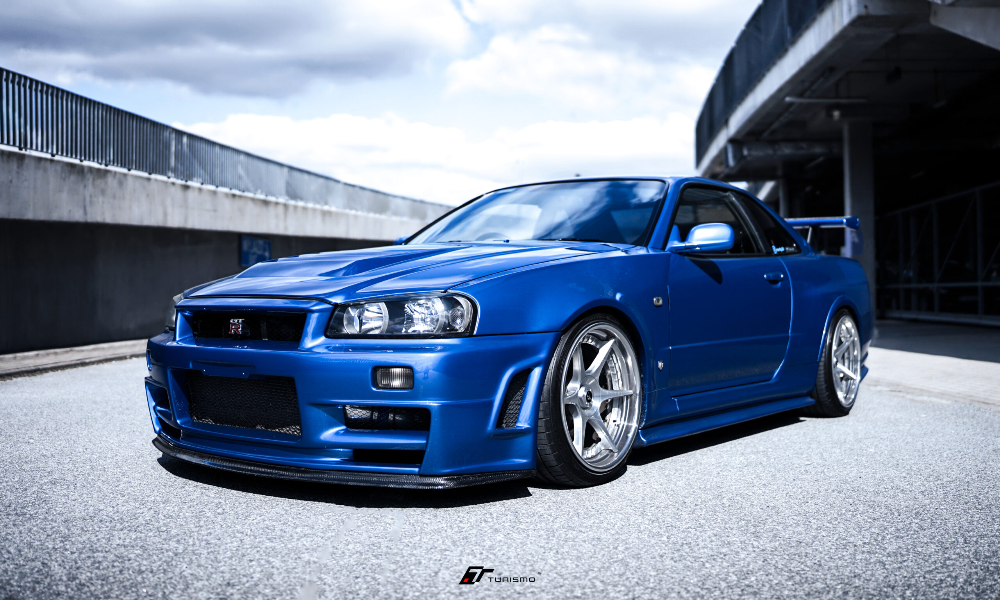
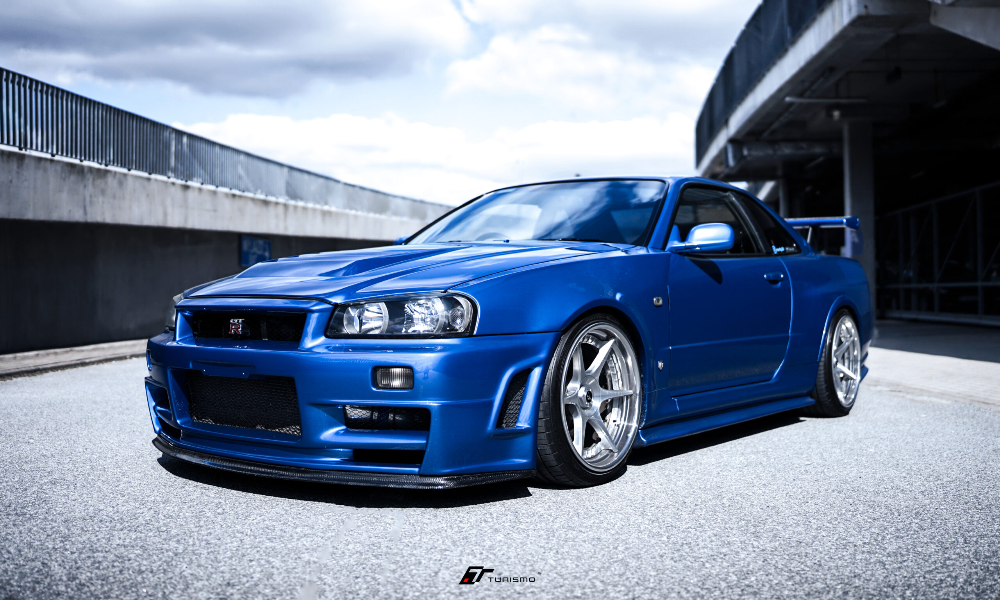

Nissan GT-R to wysokowydajny, sportowy samochód produkowany przez japońską markę Nissan. Jest znany ze swojej imponującej wydajności, zaawansowanej technologii i charakterystycznego designu. Oto kilka kluczowych cech tego modelu:
-
1. Silnik
GT-R jest napędzany przez ręcznie składany silnik V6 twin-turbo o pojemności 3.8 litra. Generuje on dużą moc, zazwyczaj przekraczającą 570 koni mechanicznych, co zapewnia znakomite osiągi i przyspieszenie.
-
2. Osiągi
Nissan GT-R jest znany z wyjątkowego przyspieszenia i prędkości maksymalnej. Jego napęd na wszystkie koła (AWD) zapewnia doskonałą trakcję i stabilność, co czyni go jednym z najlepszych samochodów w swojej klasie pod względem prowadzenia.
-
3. Technologia
Wyposażony jest w zaawansowane technologie, w tym zaawansowany system kontroli trakcji, dynamiczne zawieszenie i zaawansowany system telemetryczny, który dostarcza kierowcy szczegółowych informacji o wydajności pojazdu.
-
4. Design
GT-R ma charakterystyczny i agresywny wygląd, który podkreśla jego sportowy charakter. Aerodynamiczna sylwetka, szeroki rozstaw osi i nisko osadzone nadwozie nadają mu wyjątkowy wygląd.
-
5. Wnętrze
Wnętrze GT-R łączy luksus z funkcjonalnością. Jest przestronne i komfortowe, z wysokiej jakości materiałami i nowoczesnymi technologiami, które zapewniają kierowcy i pasażerom doskonałe wrażenia z jazdy.
-
6. Dziedzictwo
Nissan GT-R, znany również jako "Godzilla", ma bogatą historię i dziedzictwo w świecie motoryzacji. Jest to samochód kultowy, uwielbiany przez entuzjastów wyścigów i motoryzacji na całym świecie.
Podsumowując, Nissan GT-R to niezwykle wydajny i zaawansowany technologicznie samochód sportowy, który oferuje wyjątkowe osiągi, nowoczesne technologie i charakterystyczny design. Jest symbolem mocy i precyzji w świecie motoryzacji.


 
